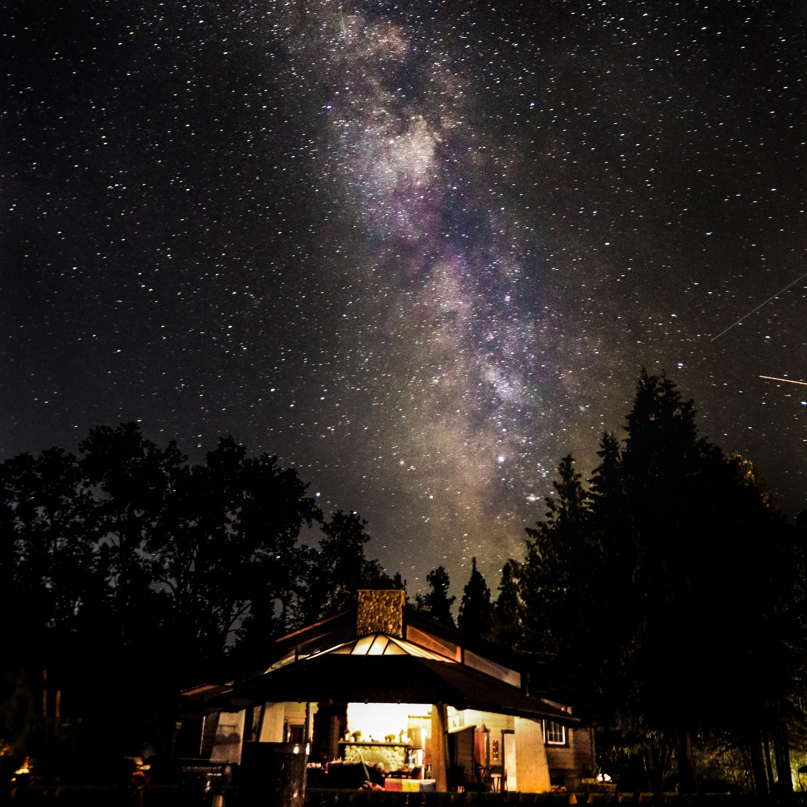
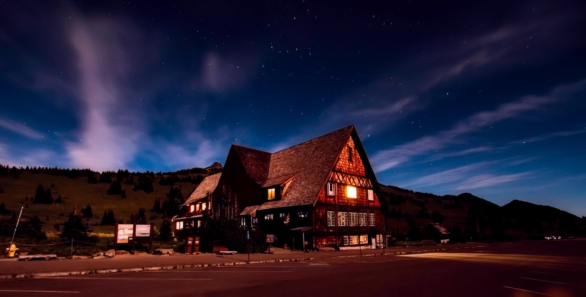

Welcome to a place where you will be inspired
Between our phones, tablets, laptops,
and televisions, some form of screen time is happening
almost 24/7. That is why it is become more imperative
than ever for us to unplug and head out into the great
outdoors. Spending time working outside increases
creativity and lower your stress levels, and now more
than ever we all need to take some time for self-care.


22 I'm baby pour-over man braid pitchfork migas,
stumptown subway tile bitters activated charcoal
seitan shabby chic normcore kitsch leggings poutine
brunch. You probably haven't heard of them fixie
photo booth whatever authentic subway tile.
Biodiesel scenester franzen polaroid vape subway
tile small batch kinfolk sustainable 8-bit mlkshk listicle.